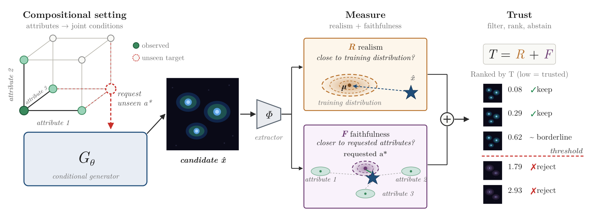
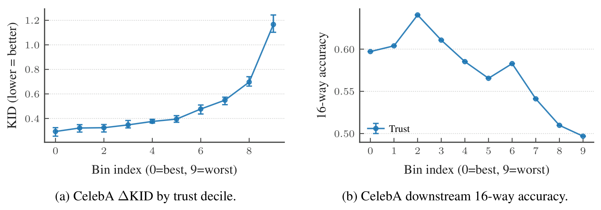

Conditional generators are most useful for conditions nobody has observed, and that is exactly where FID or KID cannot be computed, because they need real samples of the target. We score each generated sample using only the training distribution: a global realism term plus an attribute-by-attribute faithfulness term. The score filters, ranks, and can even reject samples before they are decoded; on CelebA and RxRx1 the samples it keeps improve ΔKID by 39–44% over random subsets of the same size.
Evaluating what has never been measured
Conditional diffusion models can generate images for a requested condition: a class label, a tuple of attributes, or a biological perturbation applied to a given cell type. In scientific settings, the appeal is not to reproduce experiments that have already been run, but to explore conditions that are rare, expensive, or not yet observed. If we want a cell population with certain phenotypic properties, a generator that simulates perturbations in silico could help decide which ones to test in the wet lab first.
That only helps if we can tell which generated samples to believe. They need to be visually realistic and faithful to the requested condition, even though the target population has never been seen. Here evaluation runs into a circularity. Distributional metrics such as FID and KID, and their conditional variants, compare generated samples to real samples from the target distribution. In the extrapolative regime, that distribution is unavailable by definition. Such metrics remain useful as controlled validation tools in benchmarks where we deliberately hold real data out, but they cannot decide whether one particular sample should be trusted at deployment time.
So we asked a different question: what information about sample quality is identifiable from the real training distribution alone?
Two things we can still check
We focus on two quantities that stay observable without target samples, and that correspond to two separable failure modes. A sample can be realistic but wrong for the requested condition; or it can express the requested condition while falling outside the manifold of real data. Existing post-hoc tools usually see only one side: out-of-distribution and one-class scores measure global compatibility with an in-distribution set, while prompt- or classifier-based alignment scores measure agreement with a condition. We combine both in a single score, computed in the feature space of a pretrained extractor \(\Phi\), from the generated sample and real training-set statistics only.

Concretely, let \(\mathcal{A}_1, \dots, \mathcal{A}_K\) be finite attribute-value spaces and \(a^\star = (a^\star_1, \dots, a^\star_K)\) the requested joint condition. That tuple may be absent from training while each of its individual values appears in other real samples: this is compositional support shift. We work with normalized features \(y(x) = \Phi(x) / \lVert \Phi(x) \rVert_2\), and fit every mean, covariance, precision matrix, and calibration constant on normalized real training features.
Global realism
With \(\mu_{\text{real}}\) and \(\Sigma_{\text{real}}\) the mean and regularized covariance of the real features, realism is a standardized Mahalanobis energy:
where \(m_R\) and \(s_R\) are the mean and standard deviation of \(E_{\text{real}}\) on real calibration features. Larger \(R\) means less realistic.
Attribute-wise faithfulness
The key idea is to never match a sample against the unseen condition as a whole. Instead, each attribute is checked on its own: is the requested value favored over the plausible alternatives? For every attribute \(k\) and value \(v\), we take the real-data prototype \(\eta_{k,v} = \mathbb{E}[\,y \mid a_k = v\,]\), estimate a shared precision matrix \(P_k \succ 0\) from the pooled within-value covariance, and measure
and, for the requested value \(t\), the target-vs-competitor margin
A negative margin \(M_k(y; t)\) means the sample is closer to the requested value \(t\) than to every competing value of attribute \(k\). Each margin is standardized on real samples that carry that value, \(F_k(y;t) = (M_k(y;t) - m_{k,t}) / s_{k,t}\), and averaged over attributes. The trust score is the sum of the two parts:
Lower is more trusted. The decomposition stays interpretable: \(R\) catches samples that are globally far from real features, and \(F\) catches samples that look real but do not match the requested attributes. The small sketch below plays this out in two dimensions. It is a toy, not the paper's setup, but the score inside follows the same recipe.
Request a condition
columns: cell type · rows: perturbation
Shaded cells were observed in training. Every value of each attribute appears with the reference value (c1 or p1) of the other, but the “?” combinations never do.
Generated samples
- real training data
- kept
- rejected
- malformed sample
- requested target
What the training data can and cannot tell us
It helps to be precise about the limits first. If the requested condition \(a^\star\) is missing from the real data, the conditional distribution of features at \(a^\star\) is not identifiable from the observed data without assumptions that relate observed and unobserved conditions (Proposition 1, stated informally in the paper). No post-hoc score built from the observed real distribution can therefore certify full conditional fidelity to a missing target.
What does survive is a weaker, attribute-level comparison, provided the training support contains enough variation to separate the attributes' effects. We call the needed condition reference coverage: there is a reference condition \(\bar a\) such that every value of every attribute has been observed together with the reference values of all other attributes. Writing \(a_{-k}\) for all attributes except \(a_k\), for every attribute \(k\) and every value \(v \in \mathcal{A}_k\):
Without it, attributes that only ever appear in fixed combinations are support-confounded: the data cannot say which attribute caused an observed change. Reference coverage avoids this while using the smallest possible set of observed joint conditions (the paper proves this minimality in the appendix). Under reference coverage, a comparator anchored at the reference context, with prototypes \(\mu^{\text{ref}}_{k,v} = \mathbb{E}[\,y \mid a_k = v,\ a_{-k} = \bar a_{-k}\,]\), is point-identified from the observed data (Proposition 2).
The implemented score uses the pooled prototypes \(\eta_{k,v}\) instead, because pooling uses every real sample with \(a_k = v\) and is more sample-efficient. The appendix gives sufficient conditions under which the pooled comparator makes the same attribute-wise decisions as the anchored one, and checks agreement empirically: it ranges from 0.990 to 1.000 across CelebA attributes and is 0.997 for RxRx1 cell type. The finer-grained RxRx1 siRNA decision is the main exception, with agreement 0.803.
Does it pick better samples?
We evaluate in the regime the score is designed for: it is calibrated on real training-support features and never sees real samples from the requested target at scoring time. The main scientific benchmark is RxRx1, a fluorescence microscopy dataset with 4 cell types and 1138 siRNA perturbations, i.e. 4552 cell-type × perturbation conditions; after filtering for enough real samples to evaluate reliably, the test set has 25 conditions unseen during training and 25 seen ones. For a controlled testbed we use a subset of CelebA with 4 binary attributes (Male, Smiling, Blond_Hair, Eyeglasses), giving 16 conditions. Training there sees only the all-zero reference and the four single-attribute conditions, which is exactly reference coverage, while all 16 conditions are queried at generation time.
For each setting we train a vanilla conditional diffusion model (SiT-B/2) and two REPA variants aligned to DINOv3 or SigLIP. Quality is measured with KID, which does use the held-out real target samples as ground truth, unlike the trust score: \(\Delta\text{KID} = \text{KID}(\text{gen}, \text{real}_A) - \text{KID}(\text{real}_B, \text{real}_A)\), always in a fixed DINOv3 feature space.
Filtering
Borrowing the FPR95 convention from out-of-distribution detection, we accept a generated sample if its trust score is below the 95th percentile of trust scores on real samples, and compare the accepted subset with a condition-matched random subset of the same size.
| Dataset · model | Accept% | ΔKIDtrust | ΔKIDrandom | Δ% | ρ(T) |
|---|---|---|---|---|---|
| CelebA · Vanilla | 58.7 | 0.224 ± .009 | 0.368 ± .020 | +39.1 | 0.96 |
| CelebA · REPA (DINOv3) | 55.4 | 0.228 ± .010 | 0.401 ± .031 | +43.1 | 0.96 |
| CelebA · REPA (SigLIP) | 56.1 | 0.239 ± .018 | 0.423 ± .020 | +43.6 | 0.96 |
| RxRx1 · Vanilla | 4.4 | 0.196 ± .006 | 0.323 ± .013 | +39.4 | 0.90 |
| RxRx1 · REPA (DINOv3) | 5.5 | 0.197 ± .006 | 0.333 ± .019 | +40.8 | 0.90 |
| RxRx1 · REPA (SigLIP) | 6.1 | 0.181 ± .003 | 0.312 ± .019 | +42.0 | 0.87 |
On CelebA the selected subsets improve ΔKID by 39–44% while keeping roughly 55–59% of generations. On RxRx1 the filter is far stricter, accepting only 4–6% of samples, yet the improvement is a similar 39–42%. The same table shows a second use: the mean trust of a condition is a strong predictor of how hard that condition is, with condition-level rank correlations of 0.87–0.96.
In an appendix ablation, alternative scorers in the same feature space (a per-attribute linear probe, a per-attribute nearest-neighbour distance, and CLIP alignment on CelebA) all produce near-degenerate real-data thresholds that accept almost every sample. Only the calibrated Mahalanobis score gave both a usable acceptance rate and a substantial KID improvement.
Ranking
The score is useful beyond a single threshold. We split generated samples into class-balanced trust deciles and train a condition classifier on each decile separately, then evaluate it on held-out real data.

On CelebA, ΔKID degrades roughly fourfold from the best to the worst decile, and downstream accuracy drops by about 10% when training on the least trusted samples. RxRx1 shows the same ordering for KID and downstream classification (reported in the appendix).
Biology, measured independently
DINOv3 is a learned encoder, so we also checked trust selection in CellProfiler space: 621 interpretable per-cell morphology measurements computed from segmented images, independent of any validation network. For each generated cell image we compute its distance to the centroid of the matching real condition, standardized by the spread between random halves of the real data. A value of 0 is typical real-to-real variation; anything above is excess deviation.
| Model · split | Accept% | z̄trust | z̄random | Δ% |
|---|---|---|---|---|
| Vanilla · seen | 66.3 | 0.055 | 0.111 | +50 |
| Vanilla · unseen | 21.9 | 0.583 | 0.712 | +18 |
| REPA (DINOv3) · seen | 61.2 | 0.024 | 0.137 | +83 |
| REPA (DINOv3) · unseen | 21.0 | 0.535 | 0.755 | +29 |
| REPA (SigLIP) · seen | 65.7 | 0.032 | 0.126 | +75 |
| REPA (SigLIP) · unseen | 23.5 | 0.827 | 1.020 | +19 |
Trust selection improves morphology alignment in all six model/split settings, with bootstrap confidence intervals strictly below zero. On seen conditions the selected samples are nearly real-like: for REPA-DINOv3 they sit only 0.024σ beyond typical real variation. Unseen conditions drift further from real morphology, but selection still removes 18–29% of the excess distance. The per-feature breakdown points to biologically meaningful axes, such as per-cell texture autocorrelation, image-level granularity, total cell-segmentation area, and cytoplasm shape regularity. Decile experiments in CellProfiler space tell the same story: more trusted deciles train better cell-type and condition classifiers.
Abstaining before the image exists
Post-generation scoring needs a full denoising run, the VAE decoder, and a pass through \(\Phi\). Because the score lives in a fixed real-data geometry, we can instead evaluate it on the generator's internal representations. A shallow MLP translator \(g_{\phi,\ell}\) maps the representation at layer \(\ell\) and denoising step \(\tau\) into the \(\Phi\) feature space; it is trained on real training samples with an objective that preserves the shared-covariance Mahalanobis geometry the score relies on. At inference time we evaluate the same \(T\) on the mapped feature, and abstain as soon as \(T(y^{\text{map}}_{\ell,\tau}; a^\star) > \kappa_{\ell,\tau}\) for a layer- and step-specific threshold.
| Features · model | Accept% | ΔKIDtrust | ΔKIDrandom | Δ% | ρ(T) |
|---|---|---|---|---|---|
| REPA · REPA (DINOv3) | 1.4 | 0.537 ± .032 | 0.329 ± .037 | −63.4 | 0.09 |
| REPA · REPA (SigLIP) | 3.9 | 0.564 ± .022 | 0.293 ± .023 | −92.3 | 0.13 |
| translator · Vanilla | 38.4 | 0.260 ± .003 | 0.346 ± .016 | +24.9 | 0.78 |
| translator · REPA (DINOv3) | 62.3 | 0.246 ± .003 | 0.372 ± .037 | +33.8 | 0.88 |
| translator · REPA (SigLIP) | 60.5 | 0.235 ± .011 | 0.329 ± .018 | +28.7 | 0.70 |
REPA-trained generators already align internal states to a pretrained teacher, so they look like a free baseline. That baseline partly works on CelebA (ρ(T) = 0.95, +31% ΔKID) but fails on RxRx1, where it selects worse samples than random. REPA's cosine alignment matches features without preserving the covariance structure the Mahalanobis score needs. The translator restores filtering on RxRx1, with 25–34% ΔKID improvements and ρ(T) up to 0.88, and matches post-generation filtering on CelebA. Scoring also works early: on CelebA with a 250-step sampler, the filter reaches a 33% ΔKID improvement at step 83 while saving 67% of the denoising compute, and around step 166 it matches the post-generation result while still saving 34%.
Limitations and what is next
- Discrete attributes, sufficient coverage. The theory covers discrete attributes under reference coverage. Continuous conditioning variables and weaker identifiability conditions are open.
- The feature space matters. The score inherits the geometry of \(\Phi\). In OpenPhenom's feature space it fails (ρ ≈ 0.05): its within-class covariance is effectively collapsed, around 4 effective dimensions compared with around 16 for DINOv3, and the precision weighting then amplifies noise rather than signal.
- Fine-grained attributes are harder. The pooled comparator agrees less with the identified, reference-anchored one on the RxRx1 siRNA attribute than on cell type.
- Abstaining is not steering. Today the score rejects poor samples. A natural next step is to use it to move generations toward high-trust regions.
Citation
@inproceedings{demirel2026assessing,
title={Assessing Sample Quality in Conditional Generation under Compositional Shift},
author={Berker Demirel and Valentino Maiorca and Marco Fumero and Theofanis Karaletsos and Francesco Locatello},
booktitle={The Fortieth Annual Conference on Neural Information Processing Systems},
year={2026},
url={https://arxiv.org/abs/2606.09601}
}